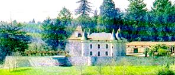
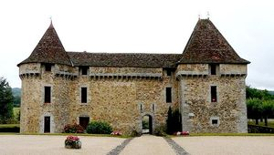
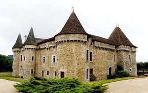
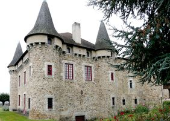
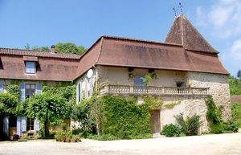
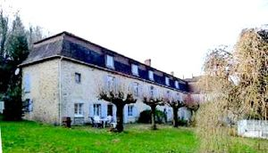
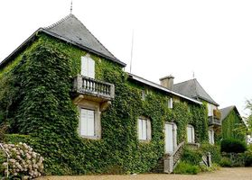
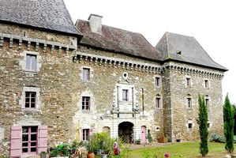

Recensement Jean-Claude Truffet
| Département | 24 — Dordogne |
| Canton | Jumilhac le Grand |
| Commune | St-Pierre de Frugie |
| Type d'édifice | Château |
| Période d'origine | XVI-XVIII |
| Coordonnées GPS | 45° 34' 23,7" Nord et 0° 59' 43,8" Est . Firbeix grav 5 - 6 Montcigoux GPS : 45° 36' 22" Nord et 1° 00' 05" Est Vieillecour grav 1 à 4 |








Trois châteaux à Saint-Pierre de Frugie et à cinq kilomètres au nord-ouest le château de Firbeix du XVIIIe siècle, le manoir de Coupiat du XVIIe siècle.
Manoir de Goursolas du XVIIe et XVIIIe siècles. Outre ces trois inscrit je n'ai pas d'info . FRUGIE, le château de Frugie se situe au nord-est, en Périgord vert. Le 18 avril 1672, Hélie d'Arlot de Frugie, chevalier, seigneur de Frugie, de Cumond et autres lieux y décède. À l'origine, il se présentait sous la forme d'un quadrilatère dont les côtés nord-ouest et sud-est ont disparu. Au début du XXIe siècle, deux lignes de bâtiments subsistent : au sud-ouest, le logis encadré de deux tours massives rectangulaires, le tout couronné de mâchicoulis vers l'extérieur ; au nord-est des ruines recouvertes de lierre et précédées d'une douve sèche avec, côté intérieur, les restes d'une chapelle. Il est inscrit au titre des M.H. depuis le 21 mars 1968 pour ses façades et sa toiture. Le château actuel, bâti aux XVe et XVIe siècles, succède à un manoir fortifié médiéval ravagé lors des conflits avec les anglais. L'entrée du logis sud est ornée d'un portail Louis XIII que précédait auparavant un pont-levis supprimé lors du comblement des douves.
MONTCIGOUX, du château du XIIe siècle ne subsiste aujourd'hui qu'une tour ronde partiellement arasée à laquelle est juxtaposée une chartreuse du XVIIe siècle. Berceau des Rolle, seigneurs du lieu dés 1540, Vers 1750, ils durent abattre lancien manoir du XIIIe siècle, Ils bâtirent à la place lactuelle chartreuse. La terre et le château furent acquis vers 1826 par Pierre Paignon de Fontaubert (1772-1857) et son épouse Sophie Louise de Brie de Lageyrat (1788-1834). La bâtisse a été remaniée au début du XXe siècle par les Henry de Lamoignerie, ses nouveaux acquéreurs. Elle a été rachetée dans les années 1970 par une famille qui la possède toujours aujourdhui.
VIEILLECOUR, se situe en Périgord vert, deux kilomètres au nord-est du bourg de Saint-Pierre-de-Frugie, bâti au XIIe siècle. Il se présente sous la forme d'un quadrilatère incomplet bordé de douves sèches sur deux côtés. L'enceinte, ponctuée de cinq tours rondes et d'une tour carrée, a conservé ses mâchicoulis. Il est inscrit au titre des M.H. depuis le 4 octobre 1946. Après avoir été grièvement blessé au siège de Châlus, Richard Cur de Lion, y aurait trouvé refuge en 1199, six jours avant de mourir. En 1372, lors de la guerre de cent ans, Bertrand Du Guesclin y installe sa garnison pour plusieurs semaines, après avoir repris Saint-Pierre-de-Frugie aux anglais. Le château, remanié du XVe au XVIIe siècle, se transforme en château d'agrément, perdant ainsi sa fonction défensive. En 1576, Jehan de Maulmont le vend à François de Laige, avant que le domaine passe successivement à Louis de Stuard de Caussade en 1598, à Jean du Glenest en 1650, puis à Jean Mosnier de Planeau en 1665. Le château est plus tard acquis par Marie Sohier (1885-1963), déjà propriétaire du château de La Meynardie, à La Coquille. Petite-fille du préfet Adrien Sohier (1815-1911), Marie Sohier était l'épouse de Marcel Rolland de Ravel (1882-1968), officier d'infanterie et maire de Saint-Pierre-de-Frugie. Au cours de la seconde moitié du XXe siècle, il a été la propriété de l'architecte Armand Lejeune (1918-2006).
Famille d'Hélie d'Arlot de Frugie Montcigoux famille de Pierre Paignon de Fontaubert Vieillecour famille de Jehan de Maulmont
"
A St-Pierre de Frugie; Frugie grav 7-8, GPS : 45° 34' 23,7" Nord et 0° 59' 43,8" Est . Firbeix grav 5 - 6 Montcigoux GPS : 45° 36' 22" Nord et 1° 00' 05" Est Vieillecour grav 1 à 4